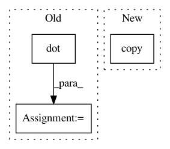

c9e8356cf6458e6a6316fd014fdc55ad3251aadb,skimage/color/colorconv.py,,_convert,#Any#Any#,489
Before Change
arr = np.swapaxes(arr, 0, -1)
oldshape = arr.shape
arr = np.reshape(arr, (3, -1))
out = np.dot(matrix, arr)
out.shape = oldshape
out = np.swapaxes(out, -1, 0)
return np.ascontiguousarray(out)
After Change
arr = _prepare_colorarray(arr)
return np.dot(arr, matrix.T.copy())
def xyz2rgb(xyz):
In pattern: SUPERPATTERN
Frequency: 3
Non-data size: 3
Instances
Project Name: scikit-image/scikit-image
Commit Name: c9e8356cf6458e6a6316fd014fdc55ad3251aadb
Time: 2016-05-01
Author: aizvorski@gmail.com
File Name: skimage/color/colorconv.py
Class Name:
Method Name: _convert
Project Name: nipy/dipy
Commit Name: 1a8468988ae35b6d3814288018fc2f9056e74974
Time: 2011-07-21
Author: garyfallidis@gmail.com
File Name: dipy/reconst/gqi.py
Class Name: GeneralizedQSampling
Method Name: __init__
Project Name: mne-tools/mne-python
Commit Name: 5633254b08c6cd97c4e261c06e08459eb51f9516
Time: 2019-03-08
Author: larson.eric.d@gmail.com
File Name: mne/beamformer/_lcmv.py
Class Name:
Method Name: make_lcmv